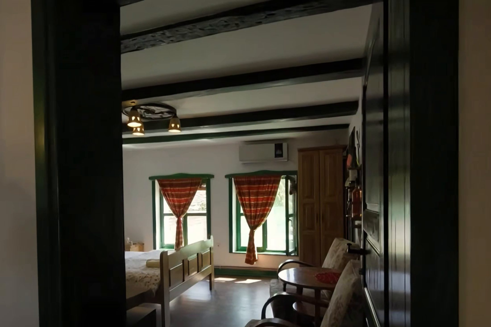

Vrdnik · Fruška gora
Two-bedroom house
For guests who stay over, with a kitchen and a bathroom of their own.
Two rooms, a kitchen and a bathroom of your own
Two bedrooms, a double bed in one and two single beds in the other. The house has its own bathroom and a fully equipped kitchen.
There is no reception desk and no fixed hours, arrival and departure are arranged around your journey.
- 2 bedrooms
- Double + 2 beds
- Equipped kitchen
- Bathroom

Booking
Find out whether your date is free
Send us a date and a number of guests. We answer the same day, with everything you need before you decide.